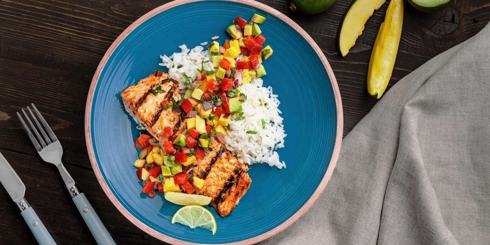
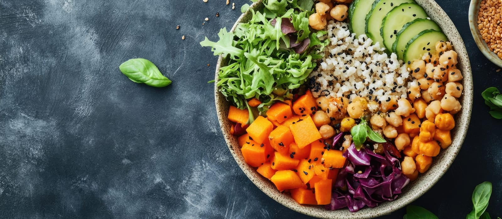
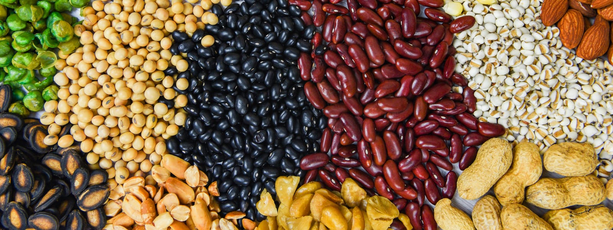

Every glass of water, every walk, every balanced plate is a win worth counting. Small choices, repeated, become big change — and we’re right here with you for all of them.
This booklet is a gentle, lower-carb starting point — 100 grams of carbohydrate a day, or less. That’s well under a typical Western diet, but far from “no carbs.” It leaves room for vegetables, fruit, beans, yogurt, and a modest serving of whole grains.
The goal isn’t perfection. It’s a steadier blood sugar, fewer spikes and crashes, and meals you can actually repeat. Use the menu as written, or swap meals you like — just keep an eye on the daily carb total.
Leafy greens, broccoli, peppers, zucchini, green beans. Low-carb, high-fiber, fill up here.
Eggs, chicken, fish, beef, tofu, Greek yogurt, beans. Keeps you full and steady.
½ cup quinoa, brown rice, sweet potato, beans, or a piece of fruit. This is where most of your 100g — or less — lives.

| Day | Breakfast | Lunch | Dinner | Snacks | Carbs |
|---|---|---|---|---|---|
| Mon | Veggie omelet (3 eggs, spinach, tomato), ½ avocado 12g | Grilled chicken salad + ½ cup chickpeas, olive-oil vinaigrette 28g | Baked salmon, roasted broccoli, ½ cup quinoa 30g | Plain Greek yogurt + ½ cup berries; 10 almonds 24g | ≈94g |
| Tue | Yogurt parfait — plain yogurt, ½ cup berries, 1 tbsp chia 15g | Turkey & hummus lettuce wraps + 1 small apple 30g | Beef & vegetable stir-fry over ½ cup brown rice 25g | Cottage cheese + ½ cup cantaloupe; baby carrots 28g | ≈98g |
| Wed | 2 eggs, sautéed peppers & onions, side of avocado 10g | Lentil soup (1 cup) + mixed green salad 30g | Grilled chicken, Brussels sprouts, ½ cup sweet potato 30g | 1 orange + string cheese; handful of walnuts 28g | ≈98g |
| Thu | Smoothie — almond milk, ½ banana, spinach, protein powder 14g | Tuna salad over greens + 1 whole-grain crispbread 28g | Shrimp & zucchini noodles + ½ cup chickpea pasta 30g | Plain yogurt + ⅓ cup blueberries; cucumber slices 24g | ≈96g |
| Day | Breakfast | Lunch | Dinner | Snacks | Carbs |
|---|---|---|---|---|---|
| Fri | Chia pudding (almond milk, chia, cinnamon) + 6 strawberries 12g | Chicken & black bean bowl (½ cup beans), salsa, lettuce 30g | Baked cod, green beans, ⅓ cup wild rice 20g | 1 apple + 1 tbsp peanut butter; celery 30g | ≈92g |
| Sat | Veggie scramble + ½ cup roasted potatoes 15g | Big salad w/ grilled salmon, ¼ cup quinoa, olive oil 28g | Turkey meatballs, zucchini noodles, ½ cup marinara 30g | Greek yogurt + ⅓ cup raspberries; almonds 23g | ≈96g |
| Sun | 2 eggs, mushrooms & spinach, ½ grapefruit 12g | Lettuce-wrap burgers + side salad + ½ cup squash 30g | Chicken fajita bowl (peppers, ½ cup beans, salsa, guac) 30g | Berries + cottage cheese; pumpkin seeds 26g | ≈98g |
| Protein | |
| Eggs, Greek yogurt | |
| Chicken, turkey | |
| Salmon, cod, shrimp, tuna | |
| Lean beef, cottage cheese | |
| Produce | |
| Greens, broccoli, peppers | |
| Zucchini, green beans | |
| Berries, apples, oranges | |
| Avocado, cucumber, celery | |
| Pantry | |
| Quinoa, brown/wild rice | |
| Beans, lentils, chickpeas | |
| Chia, almonds, walnuts | |
| Olive oil, almond milk | |
Approximate carbohydrate per common serving. Use it to swap meals while keeping each day at 100g or less.
| Smart carbs (~½ cup unless noted) | Carbs |
| Cooked quinoa | 20g |
| Brown / wild rice | 22g |
| Sweet potato | 13g |
| Black beans / chickpeas | 20g |
| Lentils (cooked) | 20g |
| Oats (cooked, ½ cup) | 14g |
| Whole-grain bread (1 slice) | 15g |
| Fruit & dairy | Carbs |
| Berries (¾ cup) | 12g |
| Apple / orange (1 small) | 20g |
| Banana (1 medium) | 27g |
| Plain Greek yogurt (¾ cup) | 7g |
| Milk (1 cup) | 12g |
| Near-zero carb | |
| Eggs, meat, fish, oils | 0–1g |
| Leafy greens, broccoli, zucchini | 2–5g |

| Day | Breakfast | Lunch | Dinner | Snacks | Water | Carbs g |
|---|---|---|---|---|---|---|
| Mon | ||||||
| Tue | ||||||
| Wed | ||||||
| Thu | ||||||
| Fri | ||||||
| Sat | ||||||
| Sun |
| Day | Activity | Minutes | Intensity | Steps | How I felt |
|---|---|---|---|---|---|
| Mon | |||||
| Tue | |||||
| Wed | |||||
| Thu | |||||
| Fri | |||||
| Sat | |||||
| Sun | |||||
| Total | Weekly minutes → | L · M · H |
| Day | Focus | Simple option (20–30 min) |
|---|---|---|
| Mon | Walk | Brisk 25-min walk after a meal |
| Tue | Strength | Bodyweight: squats, wall push-ups, rows ×2–3 sets |
| Wed | Walk | Walk + 5 min easy stretching |
| Thu | Strength | Repeat Tuesday; add a 20-sec plank |
| Fri | Walk | Longer 30–40 min walk if you can |
| Sat | Active fun | Bike, dance, yard work, swim — your choice |
| Sun | Recover | Gentle stretch or rest day |
Two 10-minute walks count as much as one 20-minute walk.
Walk after meals or pair strength with morning coffee.
Good shoes, warm up easy, stop if there’s sharp pain.
7+ hours supports appetite control and recovery.
One steady week is a win. Repeat it, adjust what didn’t fit, and bring your logs to your next visit — they tell us more than the scale alone. Weight is medical, and you don’t have to figure it out by yourself.
Become a patient — new patients welcome.